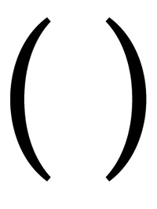

Functional programming in JS
JAVASCRIPT
In 1995 Netscape recruited Brendan Eich with the promise of "doing Scheme" for web browser.
JavaScript is a child of 2 programming languages:
- Self contributed to JS prototypal object-orientedness
- Scheme (a Lisp dialect) gave it closures
More
FUNCTIONAL PROGRAMMING
"Functional" is associated with a broad set of traits.
C has almost none of them.
Haskell has all.
JavaScript has some:
- first-class functions that:
- are objects
- have methods
- can be assigned to variables, passed as arguments
- can be manipulated like any other object
- nested functions and closures
- inner functions, lexical scope
PARENTHESES
In imperative programming languages functions can call itself directly.
In some languages function cannot call themselves because they are values (the value isn't assigned to the name until the end of definition).
However, you can pass a parameter to the function. Function can call the parameter (function can be a value).
Y combinator
discovered by Haskell B. Curry
Y = λf.(λx.f (x x)) (λx.f (x x))
One of the most strange and wonderful artifacts of Computer Science
Little Schemer
(define Y
(lambda (le)
((lambda (f) (f f))
(lambda (f)
(le (lambda (x) ((f f) x)))))))
Little Javascripter
function Y(le) {
return (function (f) {
return f(f);
}(function (f) {
return le(function (x) {
return f(f)(x);
});
}));
}

var factorial = Y(function (fac) {
return function (n) {
return n <= 2 ? n : n * fac(n - 1);
};
});
var number120 = factorial(5);
More
FUNCTIONAL IS BETTER
It's not. It's a matter of taste.
- shorter code
- it tends to take more time to write, but is usually more solid and often bug-free
- more readable once you get used to it
- parentheses hell
ESSENTIALS
CURRY
Take a function and prefill it with any number of arguments from the beginning before calling it.
Function.prototype.curry = function() {
var fn = this,
args = Array.prototype.slice.call(arguments);
return function() {
return fn.apply(this, args.concat(
Array.prototype.slice.call(arguments)));
};
};
Example
function converter(toUnit, factor, offset, input) {
offset = offset || 0;
return ((offset + input) * factor).toFixed(2) + " " + toUnit ;
}
var milesToKm = converter.curry("km", 1.60936, undefined);
var poundsToKg = converter.curry("kg", 0.45460, undefined);
var farenheitToCelsius = converter.curry("degrees C", 0.5556, -32);
milesToKm(10); // "16.09 km"
poundsToKg(2.5); // "1.14 kg"
farenheitToCelsius(98); // "36.67 degrees C"
PARTIAL APPLICATION
Prefill arguments of the function, not necessarily starting from the first one
Function.prototype.partial = function(){
var fn = this, args = Array.prototype.slice.call(arguments);
return function(){
var arg = 0;
for (var i = 0; i < args.length && arg < arguments.length; i++) {
if ( args[i] === undefined ) {
args[i] = arguments[arg++];
}
}
return fn.apply(this, args);
};
};
Example
var delay = setTimeout.partial(undefined, 10);
delay(function(){
alert("A call to this function will be temporarily delayed.");
});
var bindClick = document.body.addEventListener
.partial("click", undefined, false);
bindClick(function(){
alert( "Click event bound via curried function." );
});
MEMOIZE
Takes a function and creates a new one, which when invoked returns the result of the application of the original function. It than caches the result and when is invoked again with the same parameters returns a value from cache.
Function.prototype.memoize = function(){
var self = this,
cache = {};
return function(arg) {
if(arg in cache) {
console.log('Cache hit for '+arg);
return cache[arg];
} else {
console.log('Cache miss for '+arg);
return cache[arg] = self( arg );
}
}
};
Application
- AJAX calls for data
- slow functions which do a lot of processing
COMPOSE
Creates a function that is the composition of the passed functions, where each function consumes the return value of the function that follows.
Function.prototype.compose = function(argFunction) {
var invokingFunction = this;
return function() {
return invokingFunction.call(this,argFunction.apply(this,arguments));
}
}
More
FUNCTIONAL LIBRARIES
If you want to practice functional programming in JS, use Functional Javascript library (<3K min gz)
UNDERSCORE JS
The most popular utility adding some functional concepts to JS
underscorejs.orgLO-DASH
Started as a fork of underscore.
It has the same API, but is better and faster.
- full coverage with unit tests
- readable commented code
- very good docs
- avoids using native methods internally
- custom build tool
- optional modern build without support for legacy browsers
- …
Who is using Lo-Dash
Function methods
_.partial
_.memoize
_.compose
_.once
…
EcmaScript polyfills
_.bind
_.forEach
_.filter
_.map
_.reduce
_.every
_.some
_.debounce(foo, wait);
_.throttle(foo, wait);
Takes a function and wait value and only invokes it at most once every "wait" miliseconds.
var throttled = _.throttle(foo, 200);
$(window).on('scroll', throttled);
_.template
Simple, yet effective and configurable template mechanism.
<div id="generated"> Loading… </div>
<script type="text/template" id="list-tmpl">
<ul>
<% _.foreach(items, function (item) { %>
<li>
<%= item.prop %>
</li>
<% } %>
</ul>
</script>
var listTmpl = _.template(
document.getElementById('list-tmpl').innerHTML
);
document.getElementById('generated').innerHTML = listTmpl([
{ prop: '1' },
{ prop: '3' },
{ prop: '3' },
{ prop: '7' }
]);
Array and collection methods
Probably most useful methods for day-to-day programming.
Sample data set
var employees = [
{
badgeId: 123,
name: 'Jan Kowalski',
vacations: [
{
start: '2012-06-01', end: '2012-06-05', days: 5
},
{
start: '2012-08-12', end: '2012-06-16', days: 4
},
],
age: 34,
sex: 'male',
children: [
{ age: 2 }
]
},
{
badgeId: 432,
name: 'Anna Nowak',
vacations: [
{
start: '2012-01-04', end: '2012-01-05', days: 2
},
],
age: 42,
sex: 'female',
children: [
{ age: 10 },
{ age: 7 }
]
}
];
Divide employees into 2 arrays depending on their sex:
var employeesBySex = _.groupBy(employees,
function (employee) {
return employee.sex;
}
);
{
male: [ ... ],
female: [ ... ]
}
Get list of employees children sorted by age
var children = _.sortBy(
_.flatten(
_.pluck(employees, 'children')
),
'age'
);
// Alternatively:
children = _.pluck(employees, 'children'); // array of arrays
children = _.flatten(children); // flat array
children = _.sortBy(children, 'age');
Sort employees based on their total vacation length
var employeesByVacation = _.sortBy(
employees,
// returns the total length of employee's vacations
function (employee) {
return _.reduce(
employee.vacation,
function (sum, vacation) {
return sum + vacation.length;
}
);
}
);
sack( _.last( employeesByVacation, 2 ) );
Choose 4 random employees names
var lotteryWinners = _.pluck( // get array of badge ids
_.first( // get first 4 employees
_.shuffle(employees), // get employees in random order
4
),
'badgeId'
);
Add myself
lotteryWinners.push(
_.find(employees, function (employee) {
return employee.name === 'Adam Zamozniewicz';
}).badgeId
)